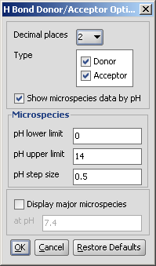
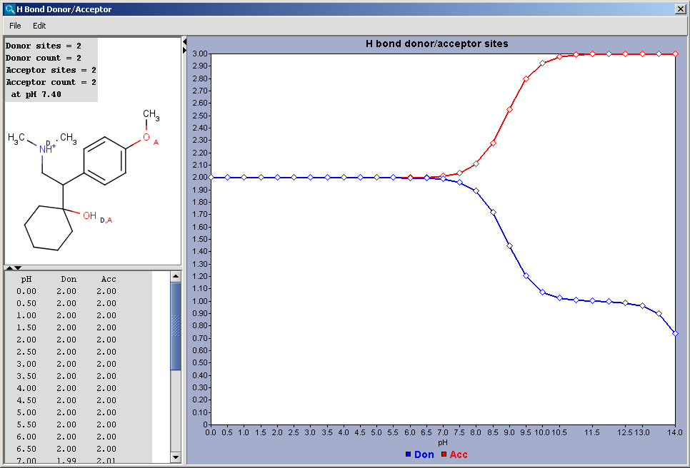
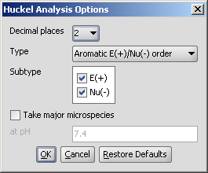
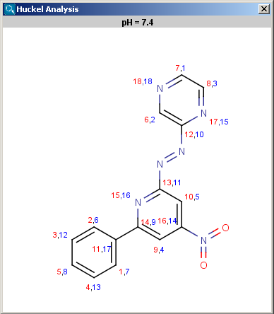
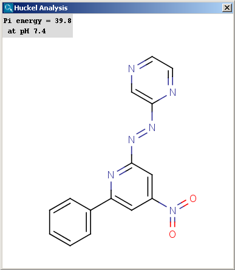
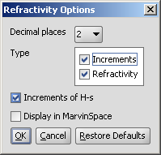
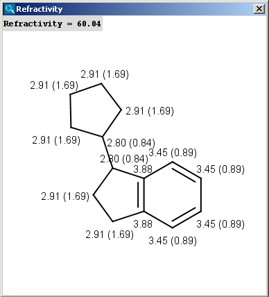
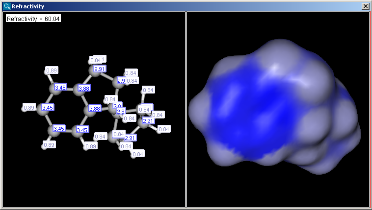

Hydrogen Bond Donor-Acceptor calculates atomic hydrogen bond donor and acceptor inclination. Atomic data and overall hydrogen bond donor and acceptor multiplicity are displayed for the input molecule (or its microspecies at a given pH). The weighted average hydrogen bond donor and acceptor multiplicities taken over the microspecies and the proportions of their occurrences are computed for different pHs and displayed in a chart.
Different calculation parameters can be set in the H Bond Donor/Acceptor Options panel:
|  |
Decimal places: setting the number of decimal places with which the result value is given.
Type: donor; acceptor specifying search for donor or acceptor characteristics.
Show microspecies data by pH: the number of donor or acceptor sites vs. pH chart is displayed.
Microspecies: pH lower limit; pH upper limit; pH step size: the pH window of the chart is set here, with data points in the step size marks.
Display major mecrospecies: the structure of the major form at the given pH is displayed.
|  |
Localization energies L(+) and L(-) for electrophilic and nucleophilic attack at an aromatic center are calculated by the Hückel method. The smaller L(+) or L(-) means more reactive atomic location. Order of atoms in E(+) or in Nu(-) attack are adjusted according to their localization energies. The total pi energy, the pi electron density and the total electron density are also calculated by the Hückel method. Depending on the chemical environment the following atoms have optimal Coulomb and resonance integral parameters: B, C, N, O, S, F, Cl, Br, I. All other atoms have a default, not optimized parameter.
Theoretical background is taken from Isaacs' book. Additional literature for the Hückel's parameters is Streitwieser's book.
Following calculation parameters can be set in the Huckel Analysis Options panel:
|  |
Decimal places: setting the number of decimal places with which the result value is given.
Type
Subtype: E(+); Nu(-): for Aromatic E(+)/Nu(-)order and Localization energy L(+)/L(-), the electrophilicity and nucleophilicity approaches can be selected (at least one fo them). Results for E(+) are coloured red, and Nu(-) blue.
Take major microspecies at pH: calculates the values for the major microspecies at the given pH.
The results appear in a new window, indicating all values at the corresponding atoms in the aromatic ring. The picture on the left is the result of Aromatic E(+)/Nu(-) order, the picture on the right the pi energy calculation:
|  |  |
Our calculation is based on the atomic method proposed by Viswanadhan et al. Molar refractivity is strongly related to the volume of the molecules and to London dispersive forces that has important effect in drug-receptor interaction.
Different calculation parameters can be set in the Refractivity Options panel:
|  |
Decimal places: setting the number of decimal places with which the result value is given.
Type
Increments of hydrogens: displays the increments given by hydrogens.
Display in MarvinSpace: the result window opens as 3D MarvinSpace viewer. If unchecked, the results will be shown on a 2D picture.
The result appears in a new window, containing a text field with the value of refractivity (dimension: 106⋅[m3⋅mol-1] and the molecule in 2D or 3D view:
|  |  |
The numbers in brackets refer to the refractivity sums of the implicit hydrogen atoms.